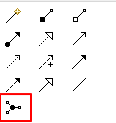
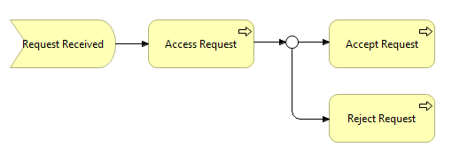

Adding a Junction
A Junction element can be added from the View's palette in the Relations palette section:

The Junction entry in the Palette
A junction is used in a number of situations to connect relationships of the same type. A junction may have multiple incoming relationships and one outgoing relationship, one incoming relationship and multiple outgoing relationships, or multiple incoming and outgoing relationships (the latter can be considered a shorthand of two subsequent junctions).
There are two types of Junction - "And" and "Or". The type of Junction can be set in the Properties window:

Setting the type of Junction
Junctions appear in the Model tree in the "Other" folder. They can also be added directly to the Model Tree by right-clicking on the "Other" folder and selecting the "New" menu item.

Example of an "Or" type Junction
 Note that Archi does not currently enforce the full ArchiMate rules when connecting junctions. You should ensure that only relationships of the same type are used to connect concepts and junctions. You can check for consistency by using the Validator.
Note that Archi does not currently enforce the full ArchiMate rules when connecting junctions. You should ensure that only relationships of the same type are used to connect concepts and junctions. You can check for consistency by using the Validator.